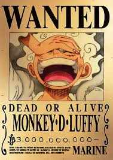
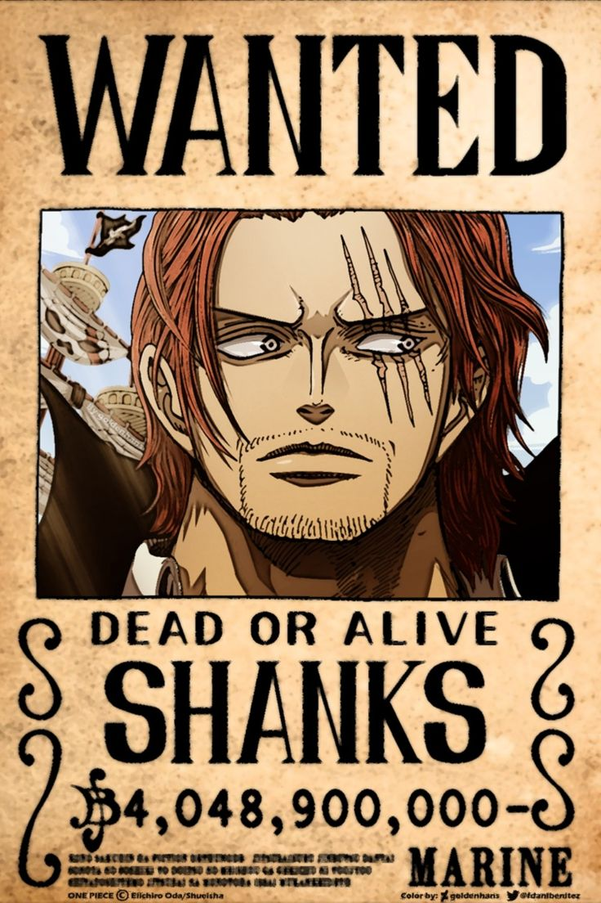
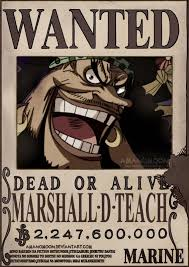
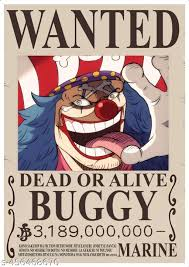

One Piece
In the Grand Line’s chaos, legends rise, storms roar, and One Piece calls. The straw hat pirate's captain Luffy’s will blazes, freedom belongs to those bold enough to defy fate.
The Four Emperors of the Sea - Yonkos

Joyful and fearless, Luffy leads the Straw Hats, wields Gear Fifth, and became Yonko after defeating Kaido in Wano.

Mysterious and powerful, Shanks commands the Red-Haired Pirates. Former Roger crew member, he maintains balance and deters major conflicts.

Cunning and ruthless, Blackbeard wields two Devil Fruits. He manipulates chaos, seeks power, and commands a terrifyingly strong pirate crew.

Comedic yet lucky, Buggy became a Yonko through exaggeration and circumstance. Former Roger pirate, now leads Cross Guild with Crocodile.
"I don’t want to conquer anything. I just think the guy with the most freedom in this whole ocean… is the Pirate King!"
-Monkey D. Luffy
Ready to join the crew?
Hey! Join the Straw Hats! Chase your dreams, fight with us, and sail the Grand Line. Together, we’ll become legends! Are you in?